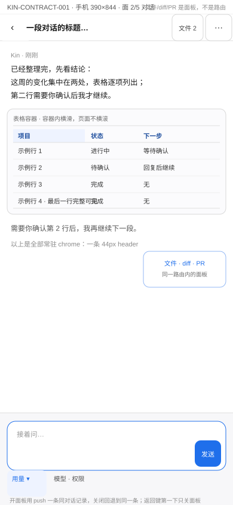
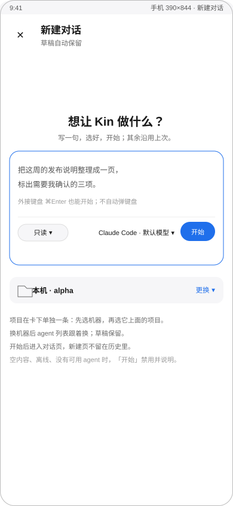

KIN-MOBILE-001手机用 Expo/RN 客户端承接固定面
把已经签过字的四个手机面——列表、对话读/发/流、审批与提问、provider/usage——搬进新的 Expo/RN 客户端 mobile-rn/。屏幕不重新设计；这条故事只决定它们由谁渲染、共享代码怎么进来、以及 RN-only 的 PR 要过什么闸门。
怎么审
- 先读下面的 切法：确认这是一条 parity 故事，不是第二次产品设计。
- 再看 现在 → 之后：今天 Capacitor 壳与之后 RN 客户端的边界。
- 逐屏看 界面：帧来自已签故事，不重画；每帧下面六段用户流程说的是 RN 上会发生什么。
- 最后看 决定：五条都已定（已定），没有要你拍板的新决定。
帧是已签故事的设计源，按相对路径直接引用；本页不复制、不缩放、也不改画。手机阅读时宽的 800 状态板只在卡片内左右滑。
MECE · 这条故事切在哪一格
job map 覆盖
定义（配对）→ 定位（列表）→ 准备（打开对话）→ 确认（读到流结束）→ 执行（发送、排队、打断）→ 监控（审批与提问）→ 修改（provider/usage 与设置边界）→ 收尾（后台、断线、回来）。八段都写了六项预期；没有省略的阶段。
为什么设备只是差异维度
本条只交付手机，因为桌面不换壳：Mac 仍是 Electron + Vite。手机内部仍按 390 单列、820 粗指针两套容器写，但那是同一个 RN 客户端的两个宽度，不是两条故事。
四条自检
- 一条意图？它服务三条已签旅程的手机端（J1 接着问、J2 读与改、J4 资料入口），但只做一件事：让手机客户端承接同一组已签面。
- 一次能交付完？不能，所以拆成 R1–R7 七块，每块一个 PR、≤约 800 行；本条是它们的总合同，不按相位重复签字。
- 范围外都有去处？Settings、routines、桌面、删壳各自写明去处；没有一条悬空。
- 需求写行为？正文写用户看到什么、失败说什么；组件名与文件路径只出现在验收和 ADR 里。
现在 → 之后
现在
- 手机入口是 Capacitor 壳，加载 web 控制台（`mobile/package.json:4`）。
- 四个面已在 web 上签过字，但手机体感仍是 web 的体感。
- 没有 `mobile-rn/`，也没有任何检查在管它。
- 共享逻辑只有 web 一份；RN 若复制就是缺陷。
之后
- 新的 Expo/RN 客户端承接同样四个面，屏幕内容不变。
- 共享 TS 原地 import；两个具名适配器（i18n、传输）承担 DOM 依赖。
- RN-only PR 走轻闸门：`tsc`、`jest`、共享导入契约、一个独立复核。
- Capacitor 壳继续发布，直到四面对 parity 后由独立故事删除。
界面 · 帧与用户流程
下面每一帧都来自已签故事，按相对路径引用；RN 不重画这些屏幕。帧讲样子，六段流程讲 RN 上发生什么。
R2 · 配对与首次打开（没有新帧）
配对不新增视觉面：沿用现有的 token 链接/扫码入口，成功后第一屏就是下面的列表。这里只写流程，避免为“登录页”造一个与已签故事无关的新设计。
- 起点
- 刚安装，没有 token；看到配对入口，而不是空列表。
- 动作
- 扫码或粘贴 `?token=` 链接。
- 立刻看到
- 按钮进入进度；成功后直接落到列表，token 不再出现在 URL 或屏幕上。
- 慢 · 空 · 失败 · 断线
- 慢：写「正在连接这台设备」；空：只显示配对入口；失败：区分链接过期、设备离线、网络不可达并保留重试；断线：token 已保存，恢复后自动重试。
- 键盘与焦点
- 粘贴框可聚焦，键盘不遮按钮；Enter 提交；失败后焦点回输入框并读出错误。
- 离开再回来
- token 进 Keychain；杀掉应用再开仍已登录；过期 token 不静默重试。
R3 · 对话列表

- 起点
- 已配对，落在列表；设备 → 项目 → 对话三层，项目默认折叠，只开最近对话所在的项目。
- 动作
- 展开项目、滚动、搜索、点一条对话。
- 立刻看到
- 两行式行：标题一行，agent · 相对时间 · 状态一行；按下有可见反馈；点开在同一栈里推出对话。
- 慢 · 空 · 失败 · 断线
- 慢：设备标题骨架，底部导航立刻可点；空：「还没有对话」+ 新建；失败：该项目下一行「读取失败，重试」，已加载行不清空；断线：顶部横幅，缓存行仍可读。
- 键盘与焦点
- 每行是停点，读屏读出「标题 · agent · 时间 · 状态」；外接键盘 ↑↓ 移动、Enter 打开；返回焦点回到那一行。
- 离开再回来
- 折叠、滚动、搜索词保留；从对话返回不重载整页。
R4 · 读一段对话


- 起点
- 从列表、推送或深链进入；先看到最近一段，不自动滚到顶。
- 动作
- 滚动阅读；等流结束；点工具调用行展开细节。
- 立刻看到
- 文本逐步追加，不整段闪回；工具行显示名称与状态；流结束变为「已完成」；markdown 表格在 390 宽内横向滚动，不撑破页面。
- 慢 · 空 · 失败 · 断线
- 慢：保留已收到文本 + 活动行；空：「正在准备」；失败：保留文本 + 原因与重试；断线：内容不丢，恢复后从断点续读。
- 键盘与焦点
- 新增文本不反复抢读屏焦点；用户上滚后不被自动拉回底部；表格可聚焦并读表头。
- 离开再回来
- 后台回来重新订阅当前对话；已读位置保留；不重播已完成状态。
R4 · 写、发送、排队与打断


- 起点
- 对话底部 composer；agent 空闲或运行中。
- 动作
- 输入并发送；运行中再发一条进入队列；点停止打断。
- 立刻看到
- 消息立刻入流、composer 清空并保持焦点；运行中显示停止；排队显示「已排队 1 条」；打断后留下一条 meta 行。
- 慢 · 空 · 失败 · 断线
- 慢：发送转圈但草稿可编辑；空：发送禁用；失败：草稿留在 composer 并说明；断线：发送禁用并说明，恢复后草稿还在。
- 键盘与焦点
- 键盘弹出时 composer 在键盘上方；Enter 发送、Shift+Enter 换行；发送后焦点留在 composer；停止按钮有可读标签。
- 离开再回来
- 草稿、队列、滚动位置保留；不重复发送；后台回来仍能看到停止按钮。
R5 · 审批与提问

- 起点
- 对话里出现一次审批或提问；列表行显示待批计数。
- 动作
- 点卡片；批准或拒绝；回答一个问题。
- 立刻看到
- 展开命令/参数与允许范围；按下进入等待态；成功后卡片已处理并留结果；列表计数同步减少。
- 慢 · 空 · 失败 · 断线
- 慢：禁用重复点击；空：没有待处理不显示空卡；失败：卡片恢复可操作并说明；断线：禁用提交，已读审批不消失。
- 键盘与焦点
- 批准/拒绝是明确按钮，读屏读出动作与对象；危险动作不只靠颜色；提交后焦点留在结果行。
- 离开再回来
- 已处理状态从服务端重读；推送点开落到同一条；处理完不再提醒。
R6 · provider / usage sheet

- 起点
- 从对话头「⋯」或列表入口打开 sheet。
- 动作
- 切 7/30/90 天窗口；读 provider 可用性与花费；关闭。
- 立刻看到
- sheet 从底部推出，玻璃背景；先出缓存值再按窗口刷新；关闭回到原对话，滚动不变。
- 慢 · 空 · 失败 · 断线
- 慢：骨架，关闭始终可用；空：「这台设备还没有用量」；失败：保留上次数字并标「刚刚更新失败」；断线：显示缓存并说明可能过期。
- 键盘与焦点
- 模态焦点进入标题；下拉与按钮都能关；关闭后焦点回到「⋯」。
- 离开再回来
- 窗口选择本次会话保留；不写新存储键；不把 provider 配置编辑带进 RN。
R2 / R7 · 状态与连接

- 起点
- 应用在后台，或推送到达；网络从 Wi-Fi 切到蜂窝；或 token 过期。
- 动作
- 从推送点开；切回前台；等重连；或重新配对。
- 立刻看到
- 推送落到对应对话/审批；前台恢复先显示缓存再静默刷新；重连后运行中的对话继续追加。
- 慢 · 空 · 失败 · 断线
- 慢：顶部「正在重新连接」，不清空页面；空：没有缓存时是加载态不是错误；失败：一次手动重试；断线：已读内容与草稿保留；过期：回配对并说明原因。
- 键盘与焦点
- 推送进入后焦点在对话标题；恢复时不抢 composer 焦点；重连横幅是状态播报而不是弹窗。
- 离开再回来
- 未读与待批计数以服务端为准；同一条推送不重复弹；后台重连只补新事件，不重放已处理审批。
状态板
| 状态 | 列表 | 对话 / 流 | 审批 / 提问 | provider / usage |
|---|---|---|---|---|
| 加载 | 设备标题骨架，导航可点 | 消息骨架，头部与 composer 可用 | 卡片骨架，不显示假按钮 | sheet 骨架，关闭可用 |
| 空 | 「还没有对话」+ 新建 | 只有用户那条 +「还没有回答」 | 没有待处理就不显示卡 | 「这台设备还没有用量」 |
| 失败 | 该项目一行「读取失败，重试」 | 保留已收到文本 + 原因与重试 | 卡片恢复可操作并说明 | 保留上次数字，标「刚刚更新失败」 |
| 断线 | 顶部横幅，缓存行可读 | 内容不丢，composer 禁用并说明 | 禁用提交，已读审批不消失 | 显示缓存并说明可能过期 |
| 运行中 | 行状态「运行中」 | 活动行 + 停止按钮 | 待批计数可见 | 已打开的数字不因流式刷新而跳 |
| 等待批准 | 行内计数（不只靠橙点） | 批准卡进入等待态 | 按下后禁用重复点击 | 无关，保持可关闭 |
| 未配对 / 过期 | 不显示列表，只显示配对入口 | 不进入对话 | 不显示旧审批 | 不显示旧用量 |
所有状态都保留 44pt 触控目标与可读名称；状态不只靠颜色，读屏能读出同一句话。
决定
五条都已定，没有要拍板的新决定。每条仍写推荐与代价，方便以后回看为什么这样定。
D1 · 新顶层 `mobile-rn/`，`mobile/` 暂不删 已定
推荐：Expo SDK 58 + TypeScript strict + expo-router 放在新的顶层目录；Capacitor 壳继续发布，四面对 parity 后由独立 cutover 故事删除。
代价：一段时间内两套手机树并存；换来的是删壳前随时可以退回，且 web 构建完全看不到 RN 树。
D2 · 共享 TS 原地 import，不搬家 已定
推荐：Metro `watchFolders` + tsconfig `paths` 指向已有的 `transcriptProjection`、`contract.ts`、generated 类型、locale 数据与 DOM-free 的 `lib/**`；两个具名适配器（`i18n`、`api/transport`）承担 DOM 依赖，一个 grep 式契约测试守住导入闭包。
代价：适配器与别名要一直诚实；换来的是不做一次只为 RN 服务的 web 重构，web 闸门不为搬家付钱。
D3 · 16 个 exact pin，只进 `mobile-rn/package.json` 已定
推荐：每个版本都写死，发布日期不晚于 2026-11-17；不碰 `ui/package.json` 与 `go.mod`。owner 对 MANDATE 的依赖规则给了窄豁免：只覆盖 `mobile-rn/package.json`。
代价：升级要手动开 PR；换来的是新客户端起步阶段没有浮动版本，签名测试会拒绝范围与过新的日期。
D4 · RN-only diff 走轻闸门 已定
推荐：`tsc --noEmit` + `jest` + 共享导入契约 + `scripts/check.sh` 的 `mobile-rn` 作业 + 一次独立复核。UX 走查不跑：`rsi/runtime/merge.sh:752-753` 只在 `ui/src/**/*.tsx|css` 变化时触发，RN-only PR 天然跳过，不需要新开关。
代价：轻闸门不证明真机体感；换来的是 RN 脚手架不被 web 的 Playwright 流程拖住。体感由 Ethan 的真机 dogfood 验收，R7 的 PR 必须带设备证据。
D5 · 四个面 parity 才切，fork 就停 已定
推荐：列表、对话读/发/流/打断、审批/提问、provider/usage 四面在真机上绿了，才开删壳故事。若某一面必须复制共享逻辑才能 parity，停下记录是哪一面，不扩 MVP。
代价：Capacitor 壳多留一段时间；换来的是不会为了赶进度长出第二份投影/客户端，那正是 ADR 0035 写明的“证明这条路错了”的信号。
回复模板
没有待拍板决定；如果要反对某一条，只回编号与一句话即可。复制下面这段：
KIN-MOBILE-001 已读。 同意按本页与 ADR 0036 开工 R1（脚手架 + 轻闸门 + 共享导入契约）。 如需改一处：D＿ — 一句话原因。
签字
2026-11-24 CEO 代签（owner 授权，见 rsi/DECISIONS.md 2026-11-24 RN 并行）。
签字依据：ADR 0036 固定布局、in-place 共享 TS、轻闸门与依赖窄豁免；本页五条决定全部已定，无待拍板项。签字后 R1 才创建 `mobile-rn/`；本 PR 不写产品代码。